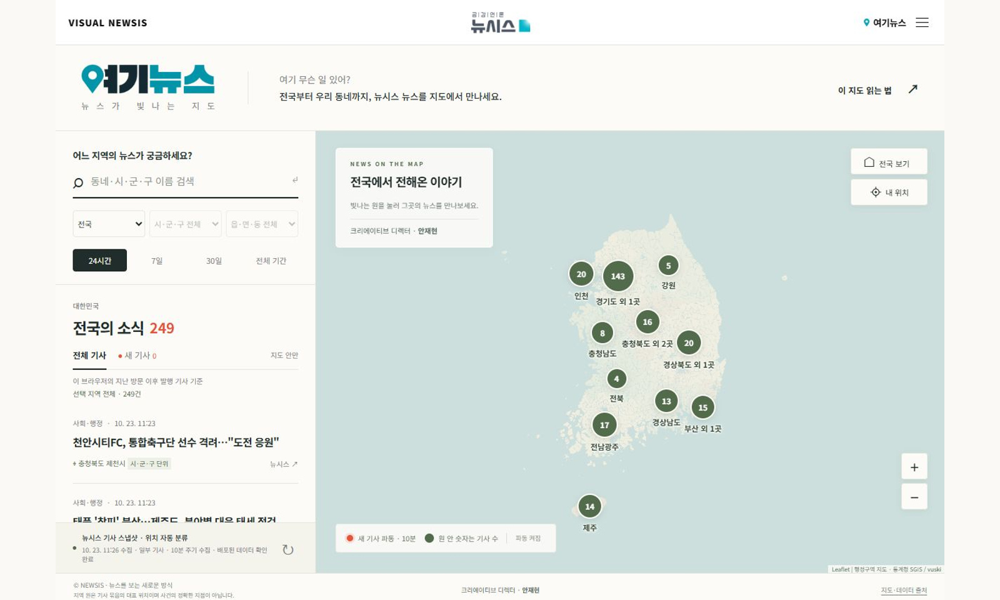
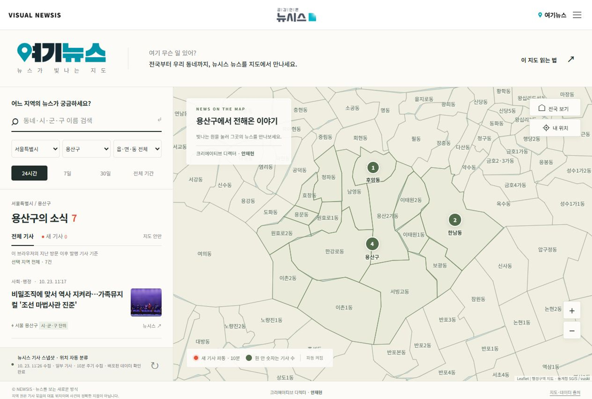
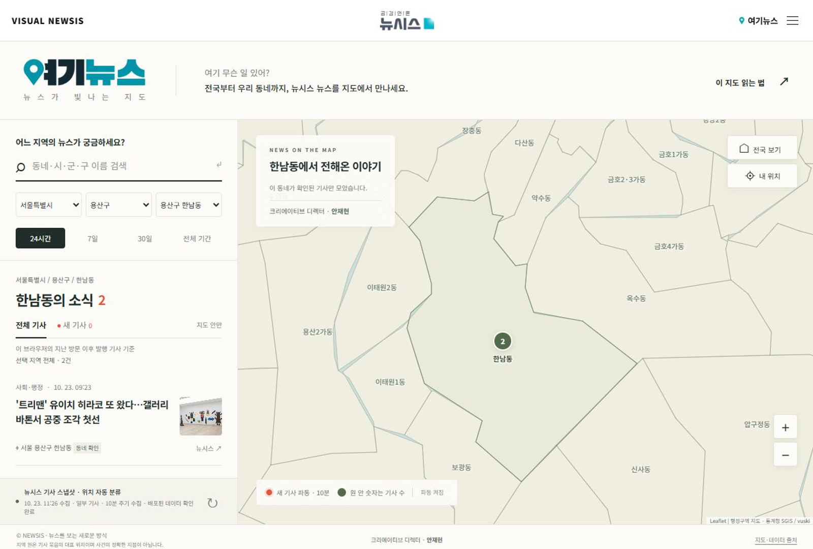
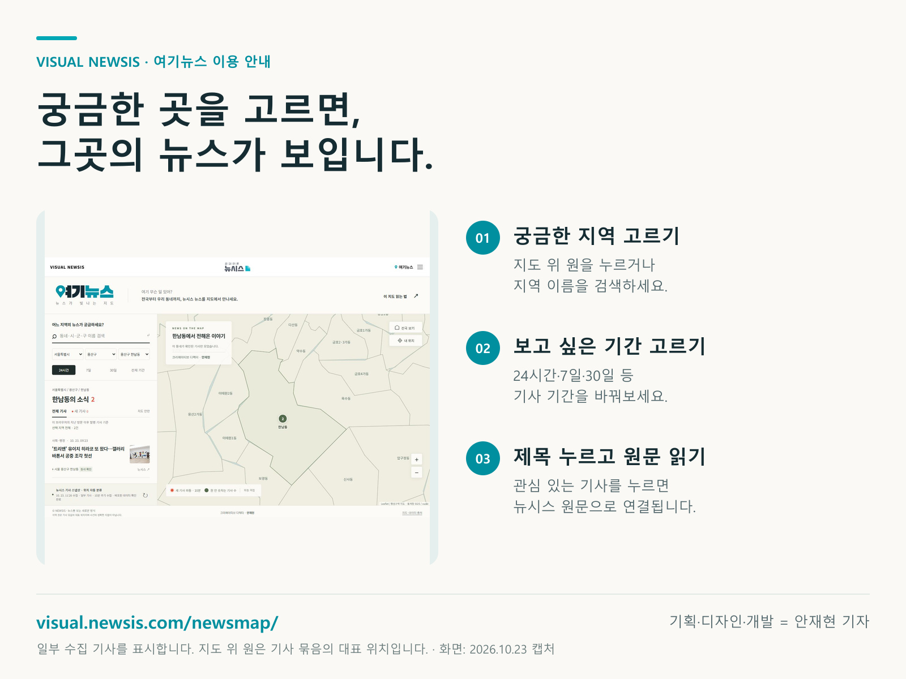

“이 동네 무슨 일이?”…검색창 대신 지도로 뉴스를 찾는다
뉴시스 ‘여기뉴스’, 전국부터 우리 동네까지 지도에서 기사 탐색

대표 이미지 · 여기뉴스 실제 서비스 화면. 기사와 수치는 캡처 당시 기준.[서울=뉴시스] 안재현 기자 = 우리 동네에는 무슨 일이 있을까. 뉴시스의 비주얼 뉴스 서비스 ‘VISUAL NEWSIS’가 지도에서 지역별 기사를 찾아보는 ‘여기뉴스’를 선보인다.
지도 위 원을 누르거나 지역 이름을 검색하면 관련 기사가 나타난다. 서울에서 용산구로, 다시 한남동으로 범위를 좁히며 관심 있는 동네의 소식을 살펴볼 수 있다. 기사 제목을 누르면 뉴시스 원문으로 연결된다.
지도를 움직이거나 확대·축소해 주변 지역을 탐색할 수 있다. 기사 기간은 24시간, 7일, 30일, 전체 기간 중 고르면 된다. 지도 위 숫자는 기사 수를, 빛이 퍼지는 파동은 새로 들어온 소식을 나타낸다.
‘내 위치’를 누르고 위치정보 이용을 허용하면 현재 있는 지역을 찾아간다. 별도 앱 설치 없이 PC와 스마트폰 웹브라우저에서 이용할 수 있다.

서울 용산구를 선택한 화면. (사진=여기뉴스 화면 캡처)
◆ 비주얼 뉴시스에서 지도로 우리 동네 뉴스를 직접 살펴보세요. https://visual.newsis.com/newsmap/
기획·디자인·개발 = 안재현 기자

서울 용산구 한남동을 선택한 화면. (사진=여기뉴스 화면 캡처)
여기뉴스 이용 안내. (그래픽=안재현 기자)원고: 00_출고원고.txt
캡션·출처·자료사진 URL: 02_사진설명과배치.txt
서비스: 여기뉴스 바로가기